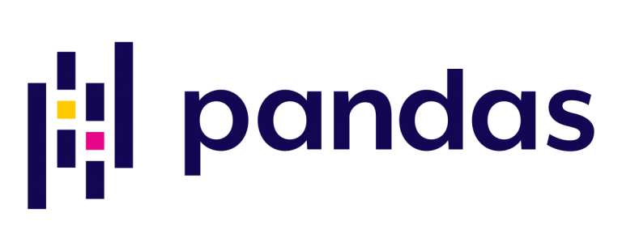
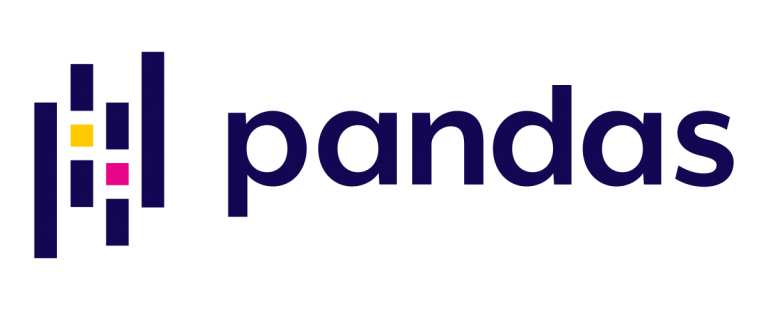

We develop the best quality Softwares that help to improve our productivity.
We develop the best quality Softwares that help to improve our productivity.
Battery Degradation Trajectory Prediction
Introduction
A dynamic project centered around the in-depth analysis of time-series data, specifically focusing on battery performance. Leveraging Python's powerful libraries, including pandas andmatplotlib, this project aimed to unravel critical insights fromCSV files,
shedding light on the intricate behavior of various battery parameters over time.
My Role
Conceptualized the data analysis approach.
Implemented data loading, refinement, andmanipulation strategies.
Developed customplotting functions and threshold-based analysis.
Conducted capacity and voltage charging analyses, applying domain specific knowledge.
Oversaw datamerging and filtering processes for comprehensive insights.
 
